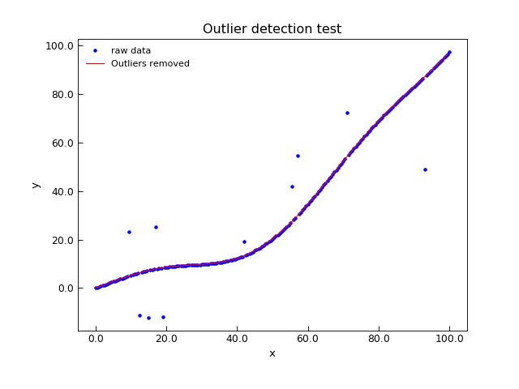
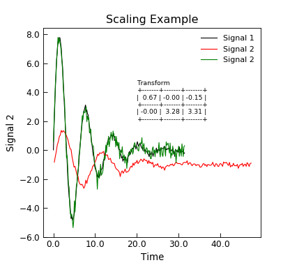

AnalysisMixin¶
-
class
Stoner.Analysis.AnalysisMixin(*args, **kargs)[source]¶ Bases:
objectA mixin calss designed to work with
Stoner.Core.DataFileto provide additional analysis methods.Methods Summary
SG_Filter([col, xcol, points, poly, order, …])Implements Savitsky-Golay filtering of data for smoothing and differentiating data. add(a, b[, replace, header])Add one column, number or array (b) to another column (a). apply(func[, col, replace, header])Applies the given function to each row in the data set and adds to the data set. bin([xcol, ycol, bins, mode, clone])Bin x-y data into new values of x with an error bar. clip(clipper[, column])Clips the data based on the column and the clipper value. decompose([xcol, ycol, sym, asym, replace])Given (x,y) data, decomposes the y part into symmetric and antisymmetric contributions in x. diffsum(a, b[, replace, header])Calculate \(\frac{a-b}{a+b}\) for the two columns a and b. divide(a, b[, replace, header])Divide one column (a) by another column, number or array (b). extrapolate(new_x[, xcol, ycol, yerr, …])Extrapolate data based on local fit to x,y data. integrate([xcol, ycol, result, result_name, …])Inegrate a column of data, optionally returning the cumulative integral. interpolate(newX[, kind, xcol, replace])Interpolate a dataset to get a new set of values for a given set of x data. make_bins(xcol, bins[, mode])Utility method to generate bin boundaries and centres along an axis. max([column, bounds])Find maximum value and index in a column of data. mean([column, sigma, bounds])Find mean value of a data column. min([column, bounds])Find minimum value and index in a column of data. multiply(a, b[, replace, header])Multiply one column (a) by another column, number or array (b). normalise([target, base, replace, header, …])Normalise data columns by dividing through by a base column value. outlier_detection([column, window, …])Function to detect outliers in a column of data. peaks(**kargs)Locates peaks and/or troughs in a column of data by using SG-differentiation. polyfit([xcol, ycol, polynomial_order, …])Pass through to numpy.polyfit. scale(other[, xcol, ycol])Scale the x and y data in this DataFile to match the x and y data in another DataFile. smooth([window, xcol, ycol, size])Smooth data by convoluting with a window. span([column, bounds])Returns a tuple of the maximum and minumum values within the given column and bounds by calling into AnalysisMixin.max()andAnalysisMixin.min().spline([xcol, ycol, sigma])Construct a spline through x and y data and replace, add new data or return spline function. stitch(other[, xcol, ycol, overlap, …])Apply a scaling to this data set to make it stich to another dataset. subtract(a, b[, replace, header])Subtract one column, number or array (b) from another column (a). threshold(threshold, **kargs)Finds partial indices where the data in column passes the threshold, rising or falling. Methods Documentation
-
SG_Filter(col=None, xcol=None, points=15, poly=1, order=0, pad=True, result=None, replace=False, header=None)[source]¶ Implements Savitsky-Golay filtering of data for smoothing and differentiating data.
Parameters: - col (index) – Column of Data to be filtered. if None, first y-column in setas is filtered.
- points (int) – Number of data points to use in the filtering window. Should be an odd number > poly+1 (default 15)
Keyword Arguments: - xcol (coilumn index) –
- poly (int) – Order of polynomial to fit to the data. Must be equal or greater than order (default 1)
- order (int) – Order of differentiation to carry out. Default=0 meaning smooth the data only.
- pad (bool or float) – Pad the start and end of the array with the mean value (True, default) or specired value (float) or leave as is.
- result (None,True, or column_index) – If not None, column index to insert new data, or True to append as last column
- header (string or None) – Header for new column if result is not None. If header is Nne, a suitable column header is generated.
Returns: (numpoy array or self) – If result is None, a numpy array representing the smoothed or differentiated data is returned. Otherwise, a copy of the modified AnalysisMixin object is returned.
Notes
If col is not specified or is None then the
DataFile.setascolumn assignments are used to set an x and y column. If col is a tuple, then it is assumed to secify and x-column and y-column for differentiating data. This is now a pass through toscipy.signal.savgol_filter()Padding can help stop wildly wrong artefacts in the data at the start and enf of the data, particularly when the differntial order is >1.
See also
User guide section Smoothing and Filtering Data
-
add(a, b, replace=False, header=None)[source]¶ Add one column, number or array (b) to another column (a).
Parameters: - a (index) – First column to work with
- b (index, float or 1D array) – Second column to work with.
Keyword Arguments: Returns: self – The newly modified
AnalysisMixin.If a and b are tuples of length two, then the firstelement is assumed to be the value and the second element an uncertainty in the value. The uncertainties will then be propagated and an additional column with the uncertainites will be added to the data.
-
apply(func, col=None, replace=True, header=None, **kargs)[source]¶ Applies the given function to each row in the data set and adds to the data set.
Parameters: - func (callable) – The function to apply to each row of the data.
- col (index) – The column in which to place the result of the function
Keyword Arguments: Note
If any extra keyword arguments are supplied then these are passed to the function directly. If you need to pass any arguments that overlap with the keyword arguments to :py:math:`AnalysisMixin.apply` then these can be supplied in a dictionary argument _extra.
The callable func should have a signature:
def func(row,**kargs):
and should return either a single float, in which case it will be used to repalce the specified column, or an array, in which case it is used to completely replace the row of data.
If the function returns a complete row of data, then the replace parameter will cause the return value to be a new datafile, leaving the original unchanged. The headers parameter can give the complete column headers for the new data file.
Returns: self – The newly modified AnalysisMixin.
-
bin(xcol=None, ycol=None, bins=0.03, mode='log', clone=True, **kargs)[source]¶ Bin x-y data into new values of x with an error bar.
Parameters: - xcol (index) – Index of column of data with X values
- ycol (index) – Index of column of data with Y values
- bins (int, float or 1d array) – Number of bins (if integer) or size of bins (if float), or bin edges (if array)
- mode (string) – “log” or “lin” for logarithmic or linear binning
Keyword Arguments: Returns: Either a clone of the current data set with the new binned data or tuple of (bin centres, bin values, bin errors, number points/bin), depending on the clone parameter.
Note
Algorithm inspired by MatLab code wbin, Copyright (c) 2012: Michael Lindholm Nielsen
See also
User Guide section (Re)Binning Data
-
clip(clipper, column=None)[source]¶ Clips the data based on the column and the clipper value.
Parameters: - column (index) – Column to look for the maximum in
- clipper (tuple or array) – Either a tuple of (min,max) or a numpy.ndarray - in which case the max and min values in that array will be used as the clip limits
Returns: self – The newly modified
AnalysisMixin.Note
If column is not defined (or is None) the
DataFile.setascolumn assignments are used.
-
decompose(xcol=None, ycol=None, sym=None, asym=None, replace=True, **kwords)[source]¶ Given (x,y) data, decomposes the y part into symmetric and antisymmetric contributions in x.
Keyword Arguments: - xcol (index) – Index of column with x data - defaults to first x column in self.setas
- ycol (index or list of indices) – indices of y column(s) data
- sym (index) – Index of column to place symmetric data in default, append to end of data
- asym (index) – Index of column for asymmetric part of ata. Defaults to appending to end of data
- replace (bool) – Overwrite data with output (true)
Returns: self – The newly modified
AnalysisMixin.Example
"""Decompose Example""" from Stoner import Data from Stoner.tools import format_val from numpy import linspace, reshape, array x = linspace(-10, 10, 201) y = 0.3 * x ** 3 - 6 * x ** 2 + 11 * x - 20 d = Data(x, y, setas="xy", column_headers=["X", "Y"]) d.decompose() d.setas = "xyyy" coeffs = d.polyfit(polynomial_order=3) str_coeffs = [format_val(c, mode="eng") for c in coeffs.ravel()] str_coeffs = reshape(array(str_coeffs), coeffs.shape) d.plot() d.text(-6, -800, "Coefficients\n{}".format(str_coeffs), fontdict={"size": "x-small"}) d.ylabel = "Data" d.title = "Decompose Example" d.tight_layout()

-
diffsum(a, b, replace=False, header=None)[source]¶ Calculate \(\frac{a-b}{a+b}\) for the two columns a and b.
Parameters: - a (index) – First column to work with
- b (index, float or 1D array) – Second column to work with.
Keyword Arguments: Returns: self – The newly modified
AnalysisMixin.If a and b are tuples of length two, then the firstelement is assumed to be the value and the second element an uncertainty in the value. The uncertainties will then be propagated and an additional column with the uncertainites will be added to the data.
-
divide(a, b, replace=False, header=None)[source]¶ Divide one column (a) by another column, number or array (b).
Parameters: - a (index) – First column to work with
- b (index, float or 1D array) – Second column to work with.
Keyword Arguments: Returns: self – The newly modified
AnalysisMixin.If a and b are tuples of length two, then the firstelement is assumed to be the value and the second element an uncertainty in the value. The uncertainties will then be propagated and an additional column with the uncertainites will be added to the data.
-
extrapolate(new_x, xcol=None, ycol=None, yerr=None, overlap=20, kind='linear')[source]¶ Extrapolate data based on local fit to x,y data.
Parameters: new_x (float or array) – New values of x data.
Keyword Arguments: - xcol (column index, None) – column containing x-data or None to use setas attribute
- ycol (column index(es) or None) – column(s) containing the y-data or None to use setas attribute.
- yerr (column index(es) or None) – y error data column or None to use setas attribute
- overlap (float or int) – range of x-data used for the local fit for extrapolating. If int then overlap number of points is used, if float then that range x-axis space is used.
- kind (str or callable) – Determines local fitting function. If string should be “linear”, “quadratic” or “cubic” if callable, then represents a function to be fitted to the data.
Returns: Array of extrapolated values.
Note
If the new_x values lie outside the span of the x-data, then the nearest overlap portion of the data is used to estimate the values. If the new_x values are within the span of the x-data then the portion of the data centred about the point and overlap points long will be used to interpolate a value.
If kind is callable, it should take x values in the first parameter and free fitting parameters as the other parameters (i.e. as with
AnalysisMixin.curve_fit()).
-
integrate(xcol=None, ycol=None, result=None, result_name=None, bounds=<function AnalysisMixin.<lambda>>, **kargs)[source]¶ Inegrate a column of data, optionally returning the cumulative integral.
Parameters: - xcol (index) – The X data column index (or header)
- ycol (index) The Y data column index (or header)
Keyword Arguments: - result (index or None) – Either a column index (or header) to overwrite with the cumulative data, or True to add a new column or None to not store the cumulative result.
- result_name (string) – The new column header for the results column (if specified)
- bounds (callable) – A function that evaluates for each row to determine if the data should be integrated over.
- kargs – Other keyword arguements are fed direct to the scipy.integrate.cumtrapz method
Returns: The final integration result
Note
This is a pass through to the scipy.integrate.cumtrapz routine which just uses trapezoidal integration. A better alternative would be to offer a variety of methods including simpson’s rule and interpolation of data. If xcol or ycol are not specified then the current values from the
Stoner.Core.DataFile.setasattribute are used.
-
interpolate(newX, kind='linear', xcol=None, replace=False)[source]¶ Interpolate a dataset to get a new set of values for a given set of x data.
Parameters: - ewX (1D array or None) – Row indices or X column values to interpolate with. If None, then the
- :py:meth:`AnalysisMixin.interpolate` returns an interpolation function. Unlike the raw interpolation
- function from scipy, this interpolation function will work with MaskedArrays by compressing them
- first.
Keyword Arguments: - kind (string) – Type of interpolation function to use - does a pass through from numpy. Default is linear.
- xcol (index or None) – Column index or label that contains the data to use with newX to determine which rows to return. Defaults to None.
- replace (bool) – If true, then the current AnalysisMixin’s data is replaced with the newly interpolated data and the current AnalysisMixin is returned.
Returns: 2D numpy array – representing a section of the current object’s data if replace is False(default) or the modofied AnalysisMixin if replace is true.
Note
Returns complete rows of data corresponding to the indices given in newX. if xcol is None, then newX is interpreted as (fractional) row indices. Otherwise, the column specified in xcol is thresholded with the values given in newX and the resultant row indices used to return the data.
If the positional argument, newX is None, then the return value is an interpolation function. This interpolation function takes one argument - if xcol was None, this argument is interpreted as array indices, but if xcol was specified, then this argument is interpreted as an array of xvalues.
-
make_bins(xcol, bins, mode='lin', **kargs)[source]¶ Utility method to generate bin boundaries and centres along an axis.
Parameters: - xcol (index) – Column of data with X values
- bins (1d_)array or int or float) – Number of bins (int) or width of bins (if float)
- mode (string) – “lin” for linear binning, “log” for logarithmic binning.
Keyword Arguments: Returns: bin_start,bin_stop,bin_centres (1D arrays) – The locations of the bin boundaries and centres for each bin.
-
max(column=None, bounds=None)[source]¶ Find maximum value and index in a column of data.
Parameters: column (index) – Column to look for the maximum in Keyword Arguments: bounds (callable) – A callable function that takes a single argument list of numbers representing one row, and returns True for all rows to search in. Returns: (float,int) – (maximum value,row index of max value) Note
If column is not defined (or is None) the
DataFile.setascolumn assignments are used.
-
mean(column=None, sigma=None, bounds=None)[source]¶ Find mean value of a data column.
Parameters: column (index) – Column to look for the maximum in
Keyword Arguments: Returns: float – The mean of the data.
Note
If column is not defined (or is None) the
DataFile.setascolumn assignments are used.Todo
Fix the row index when the bounds function is used - see note of
AnalysisMixin.max()
-
min(column=None, bounds=None)[source]¶ Find minimum value and index in a column of data.
Parameters: column (index) – Column to look for the maximum in Keyword Arguments: bounds (callable) – A callable function that takes a single argument list of numbers representing one row, and returns True for all rows to search in. Returns: (float,int) – (minimum value,row index of min value) Note
If column is not defined (or is None) the
DataFile.setascolumn assignments are used.
-
multiply(a, b, replace=False, header=None)[source]¶ Multiply one column (a) by another column, number or array (b).
Parameters: - a (index) – First column to work with
- b (index, float or 1D array) – Second column to work with.
Keyword Arguments: Returns: self – The newly modified
AnalysisMixin.If a and b are tuples of length two, then the firstelement is assumed to be the value and the second element an uncertainty in the value. The uncertainties will then be propagated and an additional column with the uncertainites will be added to the data.
-
normalise(target=None, base=None, replace=True, header=None, scale=None, limits=(0.0, 1.0))[source]¶ Normalise data columns by dividing through by a base column value.
Parameters: target (index) – One or more target columns to normalise can be a string, integer or list of strings or integers. If None then the default ‘y’ column is used.
Keyword Arguments: - base (index) – The column to normalise to, can be an integer or string. Depricated can also be a tuple (low,high) being the output range
- replace (bool) – Set True(default) to overwrite the target data columns
- header (string or None) – The new column header - default is target name(norm)
- scale (None or tuple of float,float) – Output range after normalising - low,high or None to map to -1,1
- limits (low,high) – Take the input range from the high and low fraction of the input when sorted.
Returns: self – The newly modified
AnalysisMixin.Notes
The limits parameter is used to set the input scale being normalised from - if the data has a few outliers then this setting can be used to clip the input range before normalising. The parameters in the limit are the values at the low and high fractions of the cumulative distribution function of the data.
-
outlier_detection(column=None, window=7, certainty=3.0, action='mask', width=1, func=None, **kargs)[source]¶ Function to detect outliers in a column of data.
Parameters: column (column index) – defaults to the current y set column.
Keyword Arguments: - window (int) – data window for anomoly detection
- certainty (float) – eg 3 detects data 3 standard deviations from average
- action (str or callable) – what to do with outlying points, options are * ‘mask’ outlier points are masked (default) * ‘mask row’ outlier rows are masked * ‘delete’ outlier rows are deleted * callable the value of the action keyword is called with the outlier row * anything else defaults to do nothing.
- width (odd integer) – Number of rows that an outliing spike could occupy. Defaults to 1.
- func (callable) – A function that determines if the current row is an outlier.
Returns: self – The newly modified
AnalysisMixin.outlier_detection will add row numbers of detected outliers to the metadata of d, also will perform action depending on request eg ‘mask’, ‘delete’ (any other action defaults to doing nothing).
The detection looks at a window of the data, takes the average and looks to see if the current data point falls certainty * std deviations away from data average.
The outlier detection function has the signatrure:
def outlier(row,column,window,certainity,**kargs) #code return True # or False
All extra keyword arguments are passed to the outlier detector.
IF action is a callable function then it should take the form of:
def action(i,column,row): pass
where i is the number of the outlier row, column the same value as above and row is the data for the row.
In all cases the indices of the outlier rows are added to the ;outlier’ metadata.
- Example
"""Detect outlying points from a lione.""" from Stoner import Data from Stoner.Analysis import _poly_outlier import numpy as np x = np.linspace(0, 100, 201) y = 0.01 * x ** 2 + 5 * np.sin(x / 10.0) i = np.random.randint(len(x) - 20, size=20) + 10 y[i] += np.random.normal(size=len(i), scale=20) d = Data(np.column_stack((x, y)), column_headers=["x", "y"], setas="xy") d.plot(fmt="b.", label="raw data") e = d.clone e.outlier_detection(window=5, action="delete") e.plot(fmt="r-", label="Default Outliers removed") f = d.clone f.outlier_detection(window=21, order=3, certainty=2, width=3, action="delete", func=_poly_outlier) f.plot(fmt="g-", label="Poly Outliers removed") g = d.clone g = g.outlier_detection(window=21, order=3, certainty=3, width=3, action="delete", func=_poly_outlier) g.plot(color="purple", label="Masked outliers") g = d.clone e.title = "Outlier detection test"

-
peaks(**kargs)[source]¶ Locates peaks and/or troughs in a column of data by using SG-differentiation.
Parameters: - ycol (index) – is the column name or index of the data in which to search for peaks
- width (int or float) – is the expected minium halalf-width of a peak in terms of the number of data points (int) or distance in x (float). This is used in the differnetiation code to find local maxima. Bigger equals less sensitive to experimental noise, smaller means better eable to see sharp peaks
- poly (int) – This is the order of polynomial to use when differentiating the data to locate a peak. Must >=2, higher numbers will find sharper peaks more accurately but at the risk of finding more false positives.
Keyword Arguments: - significance (float) – is used to decide whether a local maxmima is a significant peak. Essentially just the curvature of the data. Bigger means less sensistive, smaller means more likely to detect noise. Default is the maximum curvature/(2*width)
- xcol (index or None) – name or index of data column that p[rovides the x-coordinate (default None)
- peaks (bool) – select whether to measure peaks in data (default True)
- troughs (bool) – select whether to measure troughs in data (default False)
- sort (bool) – Sor the results by significance of peak
- modify (book) – If true, then the returned object is a copy of self with only the peaks/troughs left in the data.
- full_data (bool) – If True (default) then all columns of the data at which peaks in the ycol column are found. modify true implies full_data is also true. If full_data is False, then only the x-column values of the peaks are returned.
Returns: If modify is true, then returns a the AnalysisMixin with the data set to just the peaks/troughs. If modify is false (default), then the return value depends on ycol and xcol. If ycol is not None and xcol is None, then returns conplete rows of data corresponding to the found peaks/troughs. If xcol is not None, or ycol is None and xcol is None, then returns a 1D array of the x positions of the peaks/troughs.
See also
User guide section Peak Finding
-
polyfit(xcol=None, ycol=None, polynomial_order=2, bounds=<function AnalysisMixin.<lambda>>, result=None, replace=False, header=None)[source]¶ Pass through to numpy.polyfit.
Parameters: - xcol (index) – Index to the column in the data with the X data in it
- ycol (index) – Index to the column int he data with the Y data in it
- polynomial_order – Order of polynomial to fit (default 2)
- bounds (callable) – A function that evaluates True if the current row should be included in the fit
- result (index or None) – Add the fitted data to the current data object in a new column (default don’t add)
- replace (bool) – Overwrite or insert new data if result is not None (default False)
- header (string or None) – Name of column_header of replacement data. Default is construct a string from the y column headser and polynomial order.
Returns: numpy.poly – The best fit polynomial as a numpy.poly object.
Note
If the x or y columns are not specified (or are None) the the setas attribute is used instead.
This method is depricated and may be removed in a future version in favour of the more general curve_fit
-
scale(other, xcol=None, ycol=None, **kargs)[source]¶ Scale the x and y data in this DataFile to match the x and y data in another DataFile.
Parameters: other (DataFile) – The other isntance of a datafile to match to
Keyword Arguments: - xcol (column index) – Column with x points in it, default to None to use setas attribute value
- ycol (column index) – Column with ypoints in it, default to None to use setas attribute value
- xmode ('affine', 'linear','scale','offset') – How to manipulate the x-data to match up
- ymode ('linear','scale','offset') – How to manipulate the y-data to match up.
- bounds (callable) – Used to identiyf the set of (x,y) points to be used for scaling. Defaults to the whole data set if not speicifed.
- otherbounds (callable) – Used to detemrine the set of (x,y) points in the other data file. Defaults to bounds if not given.
- use_estimate (bool or 3x2 array) – Specifies whether to estimate an initial transformation value or to use the provided one, or start with an identity transformation.
- replace (bool) – Whether to map the x,y data to the new co-ordinates and return a copy of this AnalysisMixin (true) or to just return the results of the scaling.
- headers (2-element list or tuple of strings) – new column headers to use if replace is True.
Returns: Either a copy of the AnalysisMixin modified so that the x and y columns match other if replace is True, or opt_trans,*trans_err*,*new_xy_data*. Where opt_trans is the optimum affine transformation, trans_err is a matrix giving the standard error in the transformation matrix components and new_xy_data is an (n x 2) array of the transformed data.
Example
"""Example of using scale to overlap data""" from Stoner import Data from numpy import linspace, sin, exp, pi, dstack from numpy.random import normal import matplotlib as mpl from tabulate import tabulate mpl.rc("text", usetex=True) x = linspace(0, 10 * pi, 201) x2 = x * 1.5 + 0.23 y = 10 * exp(-x / (2 * pi)) * sin(x) + normal(size=len(x), scale=0.1) y2 = 3 * exp(-x / (2 * pi)) * sin(x) - 1 + normal(size=len(x), scale=0.1) d = Data(x, y, column_headers=["Time", "Signal 1"], setas="xy") d2 = Data(x2, y2, column_headers=["Time", "Signal 2"], setas="xy") d.plot() d2.plot(figure=d.fig) d3 = d2.scale(d, header="Signal 2 scaled", xmode="affine") d3.plot(figure=d.fig) d3["test"] = linspace(1, 10, 10) txt = tabulate(d3["Transform"], floatfmt=".2f", tablefmt="grid") d3.text(20, 2, "Transform\n{}".format(txt), fontdict={"size": "x-small"}) d3.title = "Scaling Example"

-
smooth(window='boxcar', xcol=None, ycol=None, size=None, **kargs)[source]¶ Smooth data by convoluting with a window.
Parameters: window (string or tuple) – Defines the window type to use by passing to
scipy.signal.get_window().Keyword Arguments: - xcol (column index or None) – Data to use as x data if needed to define a window. If None, use
Stoner.Core.DataFile.setas - ycvol (column index or None) – Data to be smoothed
- size (int or float) – If int, then the number of points to use in the smoothing window. If float, then the size in x-data to be used.
- result (bool or column index) – Whether to add the smoothed data to the dataset and if so where.
- replace (bool) – Replace the exiting data or insert as a new column.
- header (string) – New column header for the new data.
Returns: (self or array) – If result is False, then the return value will be a copy of the smoothed data, otherwise the return value is a copy of the AnalysisMixin object with the smoothed data added,
Notes
If size is float, then it is necessary to map the X-data to a number of rows and to ensure that the data is evenly spaced in x. To do this, the number of rows in the window is found by dividing the span in x by the size and multiplying by the total lenfth. Then the data is interpolated to a new set of evenly space X over the same range, smoothed and then interpoalted back to the original x values.
- xcol (column index or None) – Data to use as x data if needed to define a window. If None, use
-
span(column=None, bounds=None)[source]¶ Returns a tuple of the maximum and minumum values within the given column and bounds by calling into
AnalysisMixin.max()andAnalysisMixin.min().Parameters: column (index) – Column to look for the maximum in Keyword Arguments: bounds (callable) – A callable function that takes a single argument list of numbers representing one row, and returns True for all rows to search in. Returns: (float,float) – A tuple of (min value, max value) Note
If column is not defined (or is None) the
DataFile.setascolumn assignments are used.
-
spline(xcol=None, ycol=None, sigma=None, **kargs)[source]¶ Construct a spline through x and y data and replace, add new data or return spline function.
Keyword Arguments: - xcol (column index) – Column with x data or if None, use setas attribute.
- ycol (column index) – Column with y data or if None, use the setas attribute
- sigma (column index, or array of data) – Column with weights, or if None use the 1/yerr column.
- replace (Boolean or column index or None) – If True then the y-column data is repalced, if a column index then the new data is added after the specified index, if False then the new y-data is returned and if None, then spline object is returned.
- header (string) – If replace is True or a column index then use this string as the new column header.
- order (int) – The order of spline to use (1-5)
- smoothing (float or None) – The smoothing factor to use when fitting the spline. A value of zero will create an interpolating spline.
- bbox (tuple of length 2) – Bounding box for the spline - defaults to range of x values
- ext (int or str) – How to extrapolate, default is “extrapolate”, but can also be “raise”,”zeros” or “const”.
Returns: Depending on the value of replace, returns a copy of the AnalysisMixin, a 1D numpy array of data or an scipy.interpolate.UniverateSpline object.
This is really jsut a pass through to the scipy.interpolate.UnivariateSpline function. Also used in the extrapolate function.
-
stitch(other, xcol=None, ycol=None, overlap=None, min_overlap=0.0, mode='All', func=None, p0=None)[source]¶ Apply a scaling to this data set to make it stich to another dataset.
Parameters: - other (DataFile) – Another data set that is used as the base to stitch this one on to
- xcol,ycol (index or None) – The x and y data columns. If left as None then the current setas attribute is used.
Keyword Arguments: - overlap (tuple of (lower,higher) or None) – The band of x values that are used in both data sets to match, if left as None, thenthe common overlap of the x data is used.
- min_overlap (float) – If you know that overlap must be bigger than a certain amount, the bounds between the two data sets needs to be adjusted. In this case min_overlap shifts the boundary of the overlap on this DataFile.
- mode (str) – Unless func is specified, controls which parameters are actually variable, defaults to all of them.
- func (callable) – a stitching function that transforms \((x,y)\rightarrow(x',y')\). Default is to use functions defined by mode
- p0 (iterable) – if func is not None then p0 should be the starting values for the stitching function parameters
Returns: self – A copy of the current
AnalysisMixinwith the x and y data columns adjusted to stitchTo stitch the data together, the x and y data in the current data file is transforms so that \(x'=x+A\) and \(y'=By+C\) where \(A,B,C\) are constants and \((x',y')\) are close matches to the \((x,y)\) data in other. The algorithm assumes that the overlap region contains equal numbers of \((x,y)\) points mode controls whether A,B, and C are fixed or adjustable
- “All” - all three parameters adjustable
- “Scale y, shift x” - C is fixed at 0.0
- “Scale and shift y” A is fixed at 0.0
- “Scale y” - only B is adjustable
- “Shift y” - Only c is adjsutable
- “Shift x” - Only A is adjustable
- “Shift both” - B is fixed at 1.0
See also
User Guide section Stitching Datasets together
-
subtract(a, b, replace=False, header=None)[source]¶ Subtract one column, number or array (b) from another column (a).
Parameters: - a (index) – First column to work with
- b (index, float or 1D array) – Second column to work with.
Keyword Arguments: Returns: self – The newly modified
AnalysisMixin.If a and b are tuples of length two, then the firstelement is assumed to be the value and the second element an uncertainty in the value. The uncertainties will then be propagated and an additional column with the uncertainites will be added to the data.
-
threshold(threshold, **kargs)[source]¶ Finds partial indices where the data in column passes the threshold, rising or falling.
Parameters: threshold (float) – Value to look for in column col
Keyword Arguments: - col (index) – Column index to look for data in
- rising (bool) – look for case where the data is increasing in value (defaukt True)
- falling (bool) – look for case where data is fallinh in value (default False)
- xcol (index, bool or None) – rather than returning a fractional row index, return the interpolated value in column xcol. If xcol is False, then return a complete row all_vals (bool): return all crossing points of the threshold or just the first. (default False)
- transpose (bbool) – Swap the x and y columns around - this is most useful when the column assignments have been done via the setas attribute
- all_vals (bool) – Return all values that match the criteria, or just the first in the file.
Returns: float – Either a sing;le fractional row index, or an in terpolated x value
Note
If you don’t sepcify a col value or set it to None, then the assigned columns via the
DataFile.setasattribute will be used.Warning
There has been an API change. Versions prior to 0.1.9 placed the column before the threshold in the positional argument list. In order to support the use of assigned columns, this has been swapped to the present order.
-

{kind=link}
{kind=link}
{kind=link}
{kind=link}
{kind=link}
{kind=link}